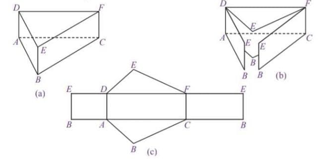
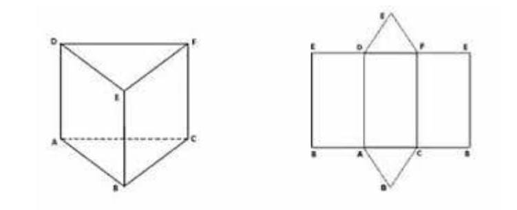
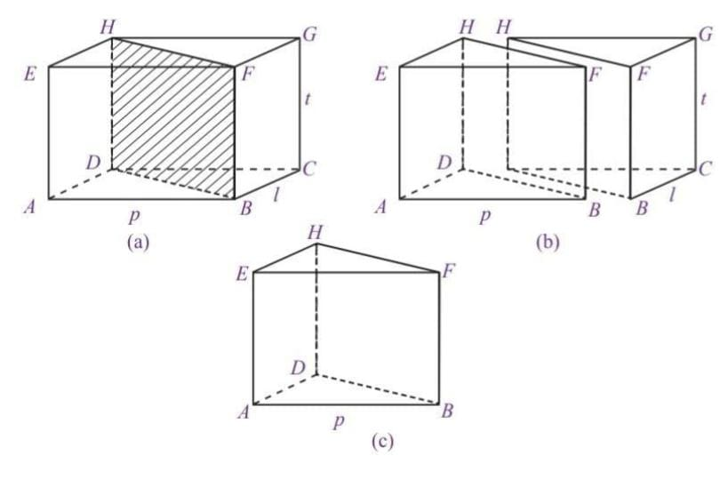
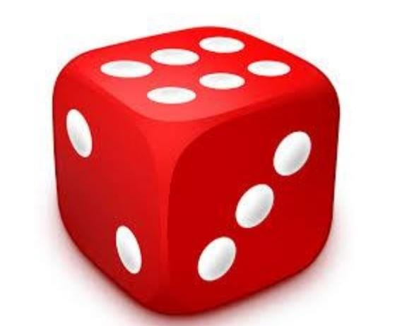
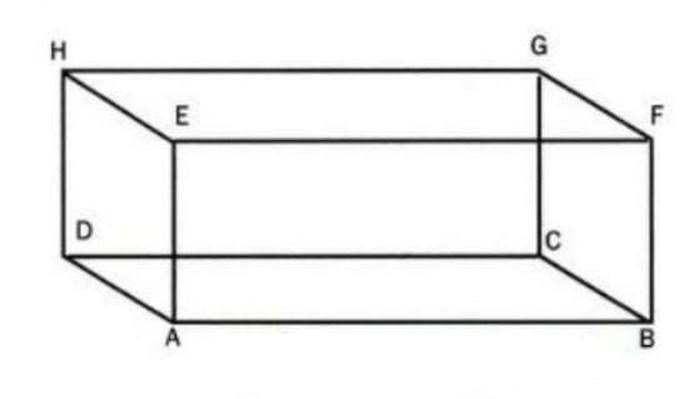
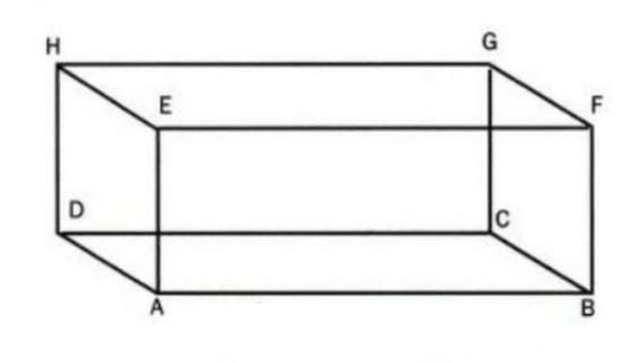
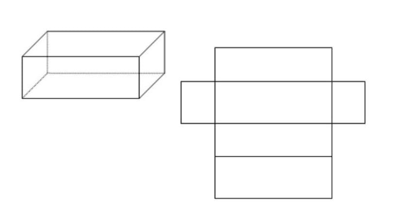
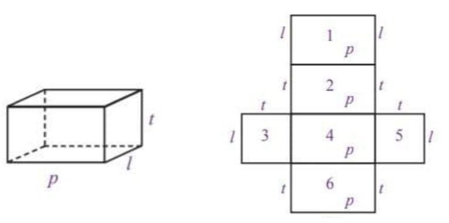
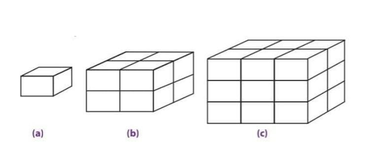

Bangun ruang sisi datar merupakan suatu bangun tiga dimensi yang memiliki ruang/ volume/ isi dan juga sisi-sisi yang membatasinya. Secara garis besar, bangun ruang bisa kita kategorikan menjadi dua kelompok, antara lain: bangun ruang sisi datar dan bangun ruang sisi lengkung. Yang termasuk dalam bangun ruang sisi datar yaitu kubus, balok, prisma, dan limas. Sementara untuk bangun ruang sisi lengkung terdiri atas kerucut, tabung, dan bola. Bangun ruang sisi datar merupakan suatu bangun ruang di mana pada masing-masing sisinya tersusun dari bangun datar. Apabila dalam suatu bangun ruang mempunyai satu saja sisi yang lengkung maka bangun tersebut tidak bisa dikatakan sebagai bangun ruang sisi datar.
Perhatikan bagian atap bangunan di bawah ini. Berbentuk apakah bagian atap itu?

Limas adalah bangun ruang yang dibatasi oleh sebuah bidang segibanyak sebagai sisi alas dan sisi-sisi tegak berbentuk segitiga
Contoh 1 :Kaitan dengan Dunia Nyata Pernahkah kamu mendengar salah satu keajaiban dunia yang disebut piramid. Piramid banyak berada di Mesir. Piramid merupakan tempat menyimpan jasad raja-raja Mesir (Fir’aun) yang telah diawetkan dengan balsem yang disebut mummi. Bentuk pyramid merupakan limas. Luas alas limas sekitar 300.000 kaki persegi dan tingginya 321 kaki. Berapakah volume piramid itu?
Penyelesaian :
Jawab : V = 1/3 At (Gunakan rumus volume limas) V = 1/3.(300.000). 321 = 32.100.000 Jadi volume piramid sekitar 32.100.000 kaki³
Coba kamu perhatikan benda-benda berikut ini.

Berbeda dengan kubus dan balok, bangun ruang ini memiliki kekhasan tersendiri. Coba perhatikan bangun ruang tersebut memiliki bentuk alas dan atap yang sama bentuk dan aturannya. Selain itu, semua sisi bagian samping berbentuk persegipanjang bangun ruang ini dinamakan prisma.
2. Sifat-sifat prismaPerhatikan prisma ABC.DEF pada gambar di samping. Secara umum, sifat-sifat prisma adalah sebagai berikut.

a. Prisma memiliki bentuk alas dan atap yang kongruen. Pada gambar terlihat bahwa segitiga ABC dan DEF memiliki ukuran dan bentuk yang sama. b. Setiap sisi bagian samping prisma berbentuk persegipanjang. Prisma segitiga pada gambar dibatasi oleh tiga persegipanjang di setiap sisi sampingnya, yaitu ABED, BCFE, dan ACFD. c. Prisma memiliki rusuk tegak. Perhatikan prisma segitiga pada gambar. Prisma tersebut memiliki tiga buah rusuk tegak, yaitu AD, BE, dan CF. Rusuk tersebut dikatakan tegak karena letaknya tegak lurus terhadap bidang alas dan atas. Dalam kondisi lain, ada juga prisma yang rusuknya tidak tegak, prisma tersebut disebut prisma sisi miring. d. Setiap diagonal bidang pada sisi yang sama memiliki ukuran yang sama. Prisma segitiga ABC.DEF pada gambar diagonal bidang pada sisi ABED memiliki ukuran yang sama panjang. Perhatikan bahwa AE = BD, BF = CE, dan AF = CD.
3. Menggambar PrismaSama seperti menggambar kubus dan balok, menggambar prisma pun akan lebih baik dilakukan pada kertas berpetak. Misalkan, prisma yang digambar adalah prisma segitiga. Berikut ini adalah langkah-langkah yang harus dilakukan dalam menggambar prisma segitiga.

a. Langkah pertama, gambarlah sebuah segitiga, baik segitiga siku-siku, sama sisi, sama kaki, maupun segitiga sebarang. Segitiga tersebut berperan sebagai sisi atas dari sebuah prisma. Pada Gambar 17, segitiga yang dibuat adalah segitiga ABC (segitiga sebarang). b. Kemudian, dari setiap ujung segitiga ABC, yaitu titik A, B, dan C, dibuat garis lurus dengan arah vertikal. Pada Gambar 17 , terlihat ada tiga ruas garis yang ditarik dari ujung-ujung segitiga ABC. Tiga ruas garis itu adalah ruas garis AD, BE, dan CF yang semuanya memiliki ukuran sama panjang. Tiga ruas tersebut merupakan rusuk tegak dari prisma yang akan dibuat. c. Langkah selanjutnya, hubungkan ujung ruas garis yang telah dibuat. Hasilnya adalah sebuah sisi/bidang DEF yang merupakan sisi alas dari prisma segitiga. Perlu diingat garis DF digambar putus-putus karena garis tersebut terletak di belakang prisma.
4. Jaring-jaring PrismaJaring-jaring prisma diperoleh dengan cara mengiris beberapa rusuk prisma tersebut sedemikian sehingga seluruh permukaan prisma terlihat. Misalkan, prisma yang akan dibuat jaring-jaringnya adalah prisma segitiga. Berikut ini adalah alur pembuatan jaring-jaring prisma segitiga. Coba kamu perhatikan Gambar 18 dengan saksama.
Dari Gambar 19, terlihat bahwa jaring-jaring prisma memiliki tiga persegipanjang sebagai sisi tegak dan dua segitiga sebagai sisi alas dan sisi atas. Berikut ini adalah berapa jaring-jaring prisma segitiga yang lain.

Terdapat beberapa macam bentuk jaring-jaring prisma segitiga yang dapat dibuat. Semuanya bergantung pada cara mengiris beberapa rusuk prisma segitiga tersebut. Coba kamu tentukan bentuk jaring-jaring prisma segitiga yang lain.
5. Luas Permukaan PrismaSama seperti kubus dan balok, luas permukaan prisma dapat dihitung menggunakan jaring-jaring prisma tersebut. Caranya adalah dengan men- jumlahkan semua luas bangun datar pada jaring-jaring prisma. Coba kamu perhatikan prisma segitiga beserta jaring-jaringnya pada Gambar 8.30 berikut ini.
Dari Gambar 8.25 terlihat bahwa prisma segitiga ABC.DEF memiliki sepasang segitiga yang identik dan tiga buah persegipanjang sebagai sisi tegak. Dengan demikian, luas permukaan prisma segitiga tersebut adalah luas permukaan prisma = luas ΔABC + luas ΔDEF + luas EDAB + luas DFCA + luas FEBC = 2 · luas ΔABC + luas EDBA + luas DFAC + luas FEBC = (2 · luas alas) + (luas bidang-bidang tegak) Jadi, luas permukaan dapat dinyatakan dengan rumus sebagai berikut. Luas permukaan prisma = 2 · luas alas + luas bidang-bidang tegak
6. Volume PrismaUntuk mengetahui rumus volume prisma, perhatikan Gambar 21 berikut.
Gambar 21 memperlihatkan sebuah balok ABCD.EFGH yang dibagi dua secara melintang. Ternyata, hasil belahan balok tersebut membentuk prisma segitiga, seperti pada Gambar 21 (b). Perhatikan prisma segitiga BCD.FGH pada Gambar 21 (c) . Dengan demikian, volume prisma segitiga adalah setengah kali volume balok. Volume prisma BCD.FGH =1/2× volume balok ABCD.EFGH =1/2 × (p × l × t) = ( 1/2× p × l) × t = luas alas × tinggi Jadi, volume prisma dapat dinyatakan dengan rumus sebagai berikut. Volume prisma = luas alas × tinggi
Pernahkah kamu melihat dadu? Dadu merupakan salah satu alat permainan yang berbentuk kubus. Apa yang dimaksud dengan kubus? Coba kamu pelajari uraian berikut ini.
 1. Pengertian KubusPerhatikan Gambar 23 secara saksama. Gambar tersebut menunjukkan sebuah bangun ruang yang semua sisinya berbentuk persegi dan semua rusuknya sama panjang. Bangun ruang seperti itu dinamakan kubus. Gambar 23 menunjukkan sebuah kubus ABCD.EFGH yang memiliki unsur-unsur sebagai berikut.
 2. Sifat-sifat Kubus
2. Sifat-sifat Kubus
a. Semua sisi kubus berbentuk persegi. Jika diperhatikan, sisi ABCD, EFGH, ABFE dan seterusnya memiliki bentuk persegi dan me miliki luas yang sama. b. Semua rusuk kubus berukuran sama panjang. Rusuk-rusuk kubus AB, BC, CD, dan seterusnya memiliki ukuran yang sama panjang. c. Setiap diagonal bidang pada kubus memiliki ukuran yang sama panjang. d. Setiap diagonal ruang pada kubus memiliki ukuran sama panjang. Dari kubus ABCD.EFGH e. Setiap bidang diagonal pada kubus memiliki bentuk persegipanjang. Perhatikan bidang diagonal ACGE
3. Menggambar KubusKamu telah memahami pengertian, unsur, dan sifat-sifat kubus. Sekarang, bagaimana cara menggambarnya? Menggambar bangun ruang khususnya kubus, lebih mudah dilakukan pada kertas berpetak. Adapun langkah-langkah yang harus dilakukan adalah sebagai berikut. ● Gambarlah sebuah persegi, misalkan persegi ABFE yang berperan sebagai sisi depan. Bidang ABFE ini disebut sebagai bidang frontal, artinya bidang yang dibuat sesuai dengan bentuk sebenarnya. Coba perhatikan Gambar 8.7 (a) . ● Langkah selanjutnya, buatlah ruas garis yang sejajar dan sama panjang dari setiap sudut persegi yang telah dibuat sebelumnya. Panjang ruas- ruas garis tersebut kurang lebih setengah dari panjang sisi persegi dengan kemiringan kurang lebih 45°. Perhatikan Gambar 8.7 (b) . Garis AD digambar putus-putus, ini menunjukkan bahwa ruas garis tersebut terletak di belakang persegi ABFE. ● Kemudian, buatlah persegi dengan cara meng hubungkan ujung-ujung ruas garis yang telah dibuat sebelumnya. Beri nama persegi CDHG. Persegi tersebut berperan sebagai sisi belakang dari kubus yang akan dibuat. Coba perhatikan Gambar 8.7 (c) . Pada gambar tersebut, terlihat bahwa sisi atas, sisi bawah, dan sisi samping digambarkan berbentuk jajargenjang. Bidang seperti ini disebut bidang ortogonal, artinya bidang yang digambar tidak sesuai dengan keadaan sebenarnya.
4. Jaring-Jaring KubusUntuk mengetahui jaring-jaring kubus, lakukan kegiatan berikut dengan kelompok belajarmu.
Kegiatan 3.11. Siapkan tiga buah dus yang berbentuk kubus, gunting, dan spidol 2. Ambil salah satu dus. Beri nama setiap sudutnya, misalnya ABCD.EFGH. Kemudian, irislah beberapa rusuknya mengikuti alur berikut. 3. Rebahkan dus yang telah diiris tadi. Bagaimanakah bentuknya? 4. Lakukan hal yang sama pada dua dus yang tersisa. Kali ini, buatlah alur yang berbeda, kemudian rebahkan. Bagaimana bentuknya? Jika kamu melakukan Kegiatan 3.1 dengan benar, pada dus pertama akan diperoleh bentuk berikut.

Hasil rebahan dus makanan pada Gambar 27 disebut jaring-jaring kubus,. Jaring-jaring kubus adalah rangkaian sisi-sisi suatu kubus yang jika dipadukan akan membentuk suatu kubus. Terdapat berbagai macam bentuk jaring-jaring kubus. Di antaranya sebagai berikut
 5. Luas Permukaan Kubus
5. Luas Permukaan Kubus
Misalkan, kamu ingin membuat kotak makanan berbentuk kubus dari sehelai karton. Jika kotak makanan yang diinginkan memiliki panjang rusuk 8 cm, berapa luas karton yang dibutuhkan untuk membuat kotak makanan tersebut? Masalah ini dapat diselesaikan dengan cara menghitung luas permukaan suatu kubus. Coba kamu perhatikan Gambar 29 berikut ini.

Dari Gambar 29 terlihat suatu kubus beserta jaring-jaringnya. Untuk mencari luas permukaan kubus, berarti sama saja dengan menghitung luas jaring-jaring kubus tersebut. Oleh karena jaring-jaring kubus merupakan 6 buah persegi yang sama dan kongruen maka luas permukaan kubus = luas jaring-jaring kubus = 6 × (s × s) = 6 × s² = L = 6 s² Jadi, luas permukaan kubus dapat dinyatakan dengan rumus sebagai berikut. Luas permukaan kubus = 6s²
6. Volume KubusMisalkan, sebuah bak mandi yang berbentuk kubus memiliki panjang rusuk 1,2 m. Jika bak tersebut diisi penuh dengan air, berapakah volume air yang dapat ditampung? Untuk mencari solusi permasalahan ini, kamu hanya perlu menghitung volume bak mandi tersebut. Bagaimana mencari volume kubus? Untuk menjawabnya, coba kamu perhatikan Gambar 30

Gambar 30 menunjukkan bentuk-bentuk kubus dengan ukuran berbeda. Kubus pada Gambar 8.11 (a) merupakan kubus satuan. Untuk membuat kubus satuan pada Gambar 8.11 (b) , diperlukan 2 × 2 × 2 = 8 kubus satuan, sedangkan untuk membuat kubus pada Gambar 8.11 (c) , diperlukan 3 × 3 × 3 = 27 kubus satuan. Dengan demikian, volume atau isi suatu kubus dapat ditentukan dengan cara mengalikan panjang rusuk kubus tersebut sebanyak tiga kali. sehingga volume kubus = panjang rusuk × panjang rusuk × panjang rusuk = s × s × s = s³ Jadi, volume kubus dapat dinyatakan sebagai berikut. Volume kubus = s³ dengan s merupakan panjang rusuk kubus.
Banyak sekali benda-benda di sekitarmu yang memiliki bentuk seperti balok. Misalnya, kotak korek api, dus air mineral, dus mie instan, batu bata, dan lain-lain. Mengapa benda-benda tersebut dikatakan berbentuk balok? Untuk menjawabnya, cobalah perhatikan dan pelajari uraian berikut.
 
1. Pengertian Balok

1. Pengertian Balok
Perhatikan gambar kotak korek api pada Gambar 31. Jika kotak korek api tersebut digambarkan secara geometris, hasilnya akan tampak seperti pada Gambar 32 . Bangun ruang ABCD.EFGH pada gambar tersebut memiliki tiga pasang sisi berhadapan yang sama bentuk dan ukurannya, di mana setiap sisinya berbentuk persegipanjang. Bangun ruang seperti ini disebut balok. Berikut ini adalah unsur-unsur yang dimiliki oleh balok ABCD.EFGH pada Gambar 32 .
2. Sifat-sifat BalokBalok memiliki sifat yang hampir sama dengan kubus. Amatilah balok ABCD. EFGH pada gambar di samping. . Berikut ini akan diuraikan sifat-sifat balok. a. Sisi-sisi balok berbentuk persegipanjang. Coba kamu perhatikan sisi ABCD, EFGH, ABFE, dan seterusnya. Sisi- sisi tersebut memiliki bentuk persegipanjang. Dalam balok, minimal memiliki dua pasang sisi yang berbentuk persegipanjang. b. Rusuk-rusuk yang sejajar memiliki ukuran sama panjang. Perhatikan rusuk-rusuk balok pada gambar disamping Rusuk-rusuk yang . sejajar seperti AB, CD, EF, dan GH memiliki ukuran yang sama Panjang begitu pula dengan rusuk AE, BF, CG, dan DH memiliki ukuran yang sama panjang. c. Setiap diagonal bidang pada sisi yang berhadapan memiliki ukuran sama panjang. Dari gambar terlihat bahwa panjang diagonal bidang pada sisi yang berhadapan, yaitu ABCD dengan EFGH, ABFE dengan DCGH, dan BCFG dengan ADHE memiliki ukuran yang sama panjang. d. Setiap diagonal ruang pada balok memiliki ukuran sama panjang. Diagonal ruang pada balok ABCD.EFGH, yaitu AG, EC, DF, dan HB memiliki panjang yang sama. e. Setiap bidang diagonal pada balok memiliki bentuk persegipanjang. Coba kamu perhatikan balok ABCD.EFGH pada gambar. Bidang diagonal balok EDFC memiliki bentuk persegipanjang. Begitu pula dengan bidang diagonal lainnya.
3. Jaring-jaring BalokSama halnya dengan kubus, jaring-jaring balok diperoleh dengan cara membuka balok tersebut sehingga terlihat seluruh permukaan balok. Coba kamu perhatikan alur pembuatan jaring-jaring balok yang digambarkan pada gambar
Jaring-jaring balok yang diperoleh pada Gambar 34 tersusun atas rangkaian 6 buah persegipanjang. Rangkaian tersebut terdiri atas tiga pasang persegipanjang yang setiap pasangannya memiliki bentuk dan ukuran yang sama. Terdapat berbagai macam bentuk jaring-jaring balok. Di antaranya adalah sebagai berikut.
 4. Luas Permukaan Balok
4. Luas Permukaan Balok
Cara menghitung luas permukaan balok sama dengan cara menghitung luas permukaan kubus, yaitu dengan menghitung semua luas jaring-jaringnya. Coba kamu perhatikan gambar berikut.
Misalkan, rusuk-rusuk pada balok diberi nama p (panjang), l (lebar), dan t (tinggi) seperti pada gambar .Dengan demikian, luas permukaan balok tersebut adalah luas permukaan balok = luas persegipanjang 1 + luas persegipanjang 2 + luas persegipanjang 3 + luas persegipanjang 4 + luas persegipanjang 5 + luas persegipanjang 6 = (p × l) + (p × t) + (l × t) + (p × l) + (l × t) + (p × t) = (p × l) + (p × l) + (l × t) + (l × t) + (p × t) + (p × t) = 2 (p × l) + 2(l × t) + 2(p × t) = 2 ((p × l) + (l × t) + (p × t) = 2 (pl+ lt + pt) Jadi, luas permukaan balok dapat dinyatakan dengan rumus sebagai berikut. Luas permukaan balok = 2(pl + lt + pt)
5. Volume BalokProses penurunan rumus balok memiliki cara yang sama seperti pada kubus. Caranya adalah dengan menentukan satu balok satuan yang dijadikan acuan untuk balok yang lain. Proses ini digambarkan pada Gambar 8.18 . Coba cermati dengan saksama.
Gambar 8.18 menunjukkan pembentukan berbagai balok dari balok satuan. Gambar 8.18 (a) adalah balok satuan. Untuk membuat balok seperti pada Gambar 8.18(b) , diperlukan 2 × 1 × 2 = 4 balok satuan, sedangkan untuk membuat balok seperti pada Gambar 8.18 (c) diperlukan 2 × 2 × 3 = 12 balok satuan. Hal ini menunjukan bahwa volume suatu balok diperoleh dengan cara mengalikan ukuran panjang, lebar, dan tinggi balok tersebut. Volume balok = panjang × lebar × tinggi = p × l × t